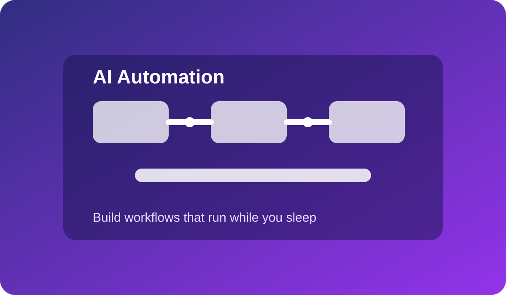
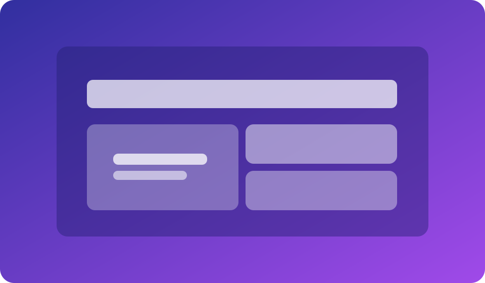

Workflow Chaining
Understand trigger-action sequences that automate repetitive operations with AI in the middle.
Live Webinar Class
Map manual operations and convert them into scalable AI-powered workflows end-to-end.

Understand trigger-action sequences that automate repetitive operations with AI in the middle.

Visualize how automated processes are monitored, optimized, and scaled without quality drop.
Best for operators, consultants, digital agencies, and small business teams. You will finish with ready-to-implement flow designs and a framework to automate multiple business processes safely.